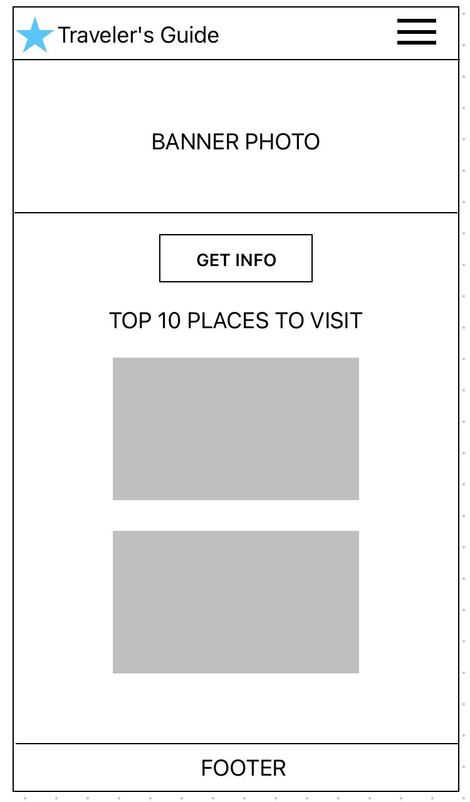
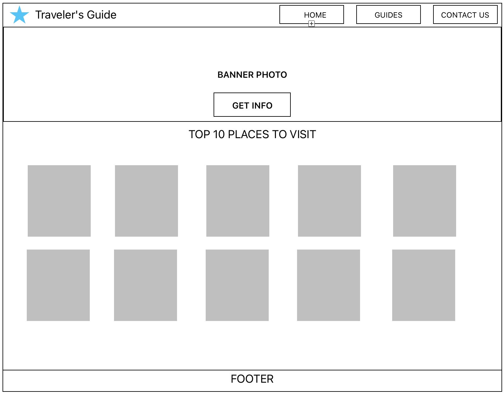

Site Name
Name:Traveler's Guide
Why I choose it? I chose this topic because I enjoy travel, and it's a great project to practice working with remote APIs, dynamic DOM updates, responsive layout design, and LocalStorage
Site Purpose
To provide travel enthusiasts with a quick, visually engaging site to access key geographic info and live weather updates for global destinations.
Scenarios
Scenario 1: "I'm planning a quick trip to Tokyo next week and need to know what to pack based on the current weather. How can I check this on the site?"
Answer: The user can search for "Tokyo" on the destination page to retrieve live weather data, temperature updates, and general geographic info via the weather API.
Scenario 2: "I found a destination I really want to visit in the future and don't want to search for it again later. How can I save it?"
Answer: The user can click the "Save Destination" button on any location card, which stores the selection in LocalStorage so it appears under their "Saved Trips" section instantly.
Color Scheme
To reflect an inspiring world travel and adventure theme, the following accessible color palette will be used across the site and applied directly to this Site Plan:
Typography
Primary Font: 'Geomini' (or Georgia, serif) — Used across the entire site for headings, body text, and UI elements to maintain a unified, elegant feel.
Wireframes (Home Page Layout)
Mobile View

Desktop View
